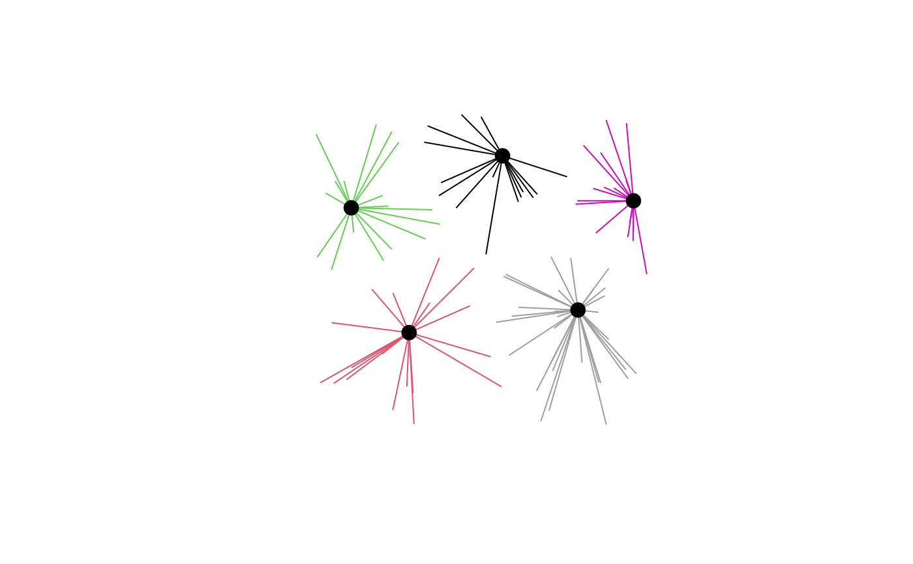

Builds "spider lines" (also called allocation lines or desire lines): one
line from each demand location to the facility that serves it. Works with
results from p_median(), p_center(), cflp(), lscp(), mclp(), and
huff(). Lines are straight by default; supply route_fun to draw lines
that follow a road network instead.
Arguments
- result
A result from
p_median(),p_center(),cflp(),lscp(),mclp(), orhuff(), with demand and facility rows in the order the solver returned them.- allocations
Which links to draw.
"primary"(default) draws at most one line per demand row: the assigned facility (.facility) or the highest-probability store (.primary_store)."all"also draws split allocations fromcflp()and every store with non-zero probability fromhuff(); for the other solvers it is the same as"primary".Drop links whose
shareis less than or equal to this value. Applies to primary and additional links alike; shares are never renormalized. Must be in[0, 1). Most useful forhuff()results withallocations = "all".- cost_matrix
Optional demand x facility cost matrix, normally the one passed to the solver. Not needed for primary links, which take their cost from the solver's
.costcolumn. If supplied, it takes precedence and providescostfor every link, including additionalcflp()andhuff()links.- anchor
How polygon (or multipoint) geometries are reduced to line endpoints:
"centroid"(default, matchingdistance_matrix()) or"point_on_surface"(guaranteed to fall inside the polygon).- route_fun
Optional function that returns network-following geometries. It is called once as
route_fun(from, to), wherefromandtoare sf POINT data frames in EPSG:4326 with the same number of rows and anidcolumn; row i offromshould be routed to row i ofto. Identical coordinate pairs are sent only once. It must return an sf or sfc object with one LINESTRING or MULTILINESTRING per row, in input order, with a known CRS. Return an empty geometry for a pair that cannot be routed; those links fall back to straight lines.r5r_route_fun()builds such a function from an r5r network.
Value
An sf object in the CRS of result$demand, one row per link, with
columns:
demand_index: row inresult$demandfacility_index: row inresult$facilities(orresult$stores)share: 1 for whole assignments; the allocation fraction forcflp(); the choice probability forhuff()weight: demand weight multiplied byshare, when the solver recorded a weight columncost: link cost fromcost_matrix, or from the solver's.costcolumn for primary links; omitted when unavailablelength: length of the drawn linerouted: only whenroute_funis used;FALSEwhere the router failed and a straight line was drawn instead
Geometry is LINESTRING, or MULTILINESTRING when route_fun is used.
Counts of unassigned demand, filtered links, and routing failures are
stored in the "spopt" attribute.
Details
Indices and matrices in spopt results are positional, so do not reorder or
filter result$demand or result$facilities before calling
spider_lines(). Join attributes onto the output with demand_index and
facility_index instead.
Demand that the solver left unassigned (uncovered points in lscp() or
mclp(), or an infeasible p_center()) produces no lines.
For data in longitude/latitude, lines are drawn as two-vertex segments.
Use sf::st_segmentize() on the output if you need great-circle arcs.
See also
r5r_route_fun() for road-following lines with r5r;
p_median(), mclp(), cflp(), huff()
Examples
# \donttest{
library(sf)
demand <- st_as_sf(data.frame(
x = runif(100), y = runif(100), population = rpois(100, 500)
), coords = c("x", "y"))
facilities <- st_as_sf(data.frame(x = runif(20), y = runif(20)),
coords = c("x", "y"))
result <- p_median(demand, facilities, n_facilities = 5,
weight_col = "population")
lines <- spider_lines(result)
plot(st_geometry(lines), col = lines$facility_index)
plot(st_geometry(result$facilities[result$facilities$.selected, ]),
pch = 19, cex = 1.5, add = TRUE)

# }
if (FALSE) { # \dontrun{
# Lines that follow the road network, using a local OSRM server
osrm_lines <- function(from, to) {
geoms <- lapply(seq_len(nrow(from)), function(i) {
r <- tryCatch(osrm::osrmRoute(src = from[i, ], dst = to[i, ]),
error = function(e) NULL)
if (is.null(r)) sf::st_linestring() else sf::st_geometry(r)[[1]]
})
sf::st_sfc(geoms, crs = 4326)
}
routed <- spider_lines(result, route_fun = osrm_lines)
} # }